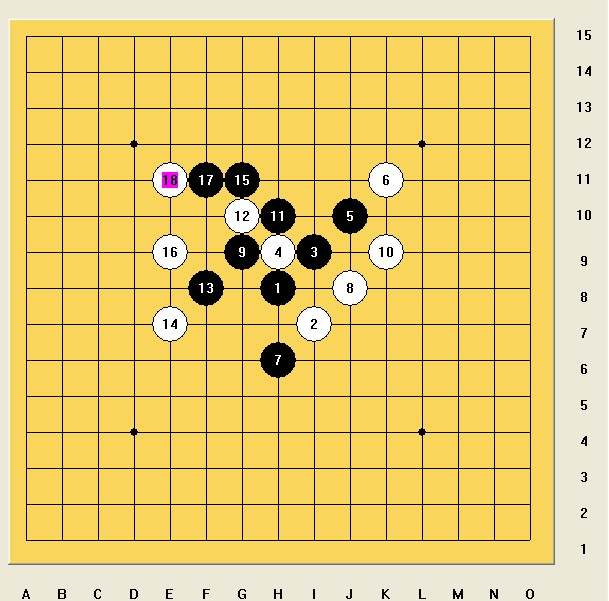

包括从4的顺序在内，暂时发现七+N种走法。。
包括从4的顺序在内，暂时发现七+N种走法。。
题目要求：黑有多少种胜法？请写出每种胜法的答案。
参与答题的朋友 把这题的答案发送到haohanqishe@126.com邮箱里面
［此帖子已被 浩瀚铭剑 在 2010-1-25 1:15:24 编辑过］
［ 有志青年 于 2010-1-28 10:02:00 时奖励此帖[金币加 20 威望加1］
［ 浩瀚棋社清清 于 2010-1-31 23:54:45 时花20金币送鲜花一朵］
闷声大发财。
［此帖子已被 江南新绿 在 2010-1-25 3:12:50 编辑过］
http://hi.baidu.com/wzqclass/blog/item/c613bd1e7d96751f413417ba.html
和这个有的一拼
包括从4的顺序在内，暂时发现七+N种走法。。
已经发送至LZ的邮箱。
［此帖子已被 gerbo 在 2010-1-25 12:29:19 编辑过］
［此帖子已被 gerbo 在 2010-1-25 12:57:05 编辑过］
已经收到4楼的答案
 很不满。为什么总是江南占了LZ下面的位置。
很不满。为什么总是江南占了LZ下面的位置。
引用：不是有一周答题的时间嘛 呵呵
原文由 心上人 发表于 2010-1-27 10:00:15 :
这段时间好忙，可惜没有时间解答了
迎新春有奖答题(第二题） 获奖名单
第一名：心心相应
第二名：凡人
请这两位朋友在下面更贴还发信息给我告诉你们的QQ号码和要什么QQ钻 谢谢合作
这道题除了本身有的VCF之外，只有四种，其它的胜法和这四种白最强防之后的杀法一样，杀法有N多种，但真正意义上只有四种不同线位的杀法，其它的杀法最后的线位也同于这四种杀法